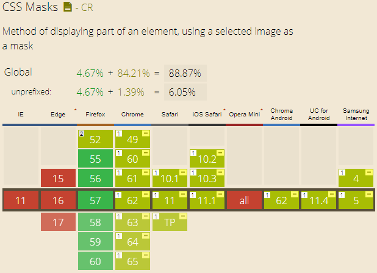

The mask attribute has been selected into the candidate recommendation specification list. So it's very valuable to learn it. Actually, its effect is awesome and great!
Let's see its compatibility first, most browers have supported some properties of it except IE(- - Fxxk IE), especailly in the mobile end.

The Webkit and Blink browsers refer to supporting the mask-image and mask-box-image properties, but lacking support for other parts of properties. In this blog, we just do examples for supported properties so that we can use what we learn into practice. Actually, mask-image property is useful enough. Let's get started!
1. What is mask-image?
Mask-image means that we can use image as mask for a certain picture. We can use "url()", "image()", "element()", even image produced by css gradient.
First, assume that we have a original picture like below:
2. Just simple image
For example, we use the static image like below. (A little bit ugly, don't mind haha)
And if we use the image as a mask for picture, what will happen?
.test1 {
-webkit-mask-image: url(../img/2017_11_30_3.png);
mask-image: url(../img/2017_11_30_3.png);
}
You can see from the picture, the mask is the ball repeated many times. Actually, we should use "png" image as our mask instead of "jpg", for "jpg" is not transparent which may cause no mask effect. If you want to use "svg" image, it's also fine.
3. Image-set property
This property allows us to use different mask for one picture in different situation/devices. For exmaple, in the following example, you can find star mask in PC end, and ball mask in mobile end.
.test2 {
-webkit-mask-image: -webkit-image-set(url(../img/2017_11_30_4.png) 1x, url(../img/2017_11_30_3.png) 2x);
mask-image: image-set(url(../img/2017_11_30_4.png) 1x, url(../img/2017_11_30_3.png) 2x);
}
4. cross-fade property
We can use this property to set opacity for mask. Let's see instance directly. In order to get the effect, we should use two images, and the opacity effect is for the second image. why? Emmmmmm, I am not the rules maker...
.test3 {
-webkit-mask-image: -webkit-cross-fade(url(../img/2017_11_30_4.png), url(../img/2017_11_30_3.png), 50%);
mask-image: cross-fade(url(../img/2017_11_30_4.png), url(../img/2017_11_30_3.png), 50%);
}
5. element() method
Unluckily, this property can be supported by Firefox, but it can allow us to use html node as a mask! For example, we have a paragraph like below, and we can use it as a mask. Please use Firefox to see this example.
I am mask text!
#masktext {
width: -webkit-fit-content;
width: -moz-fit-content;
width: fit-content;
}
.test4 {
-webkit-mask-image: -webkit-element(#masktext);
mask-image: -moz-element(#masktext);
mask-image: element(#masktext);
}
6. CSS gradient image
You can use "linear-gradient" or "radial-gradient", actually we can set the transpant gradient to imitate the same effect.
.test5 {
-webkit-mask-image: repeating-linear-gradient(rgba(0,0,0,0) 4px, rgba(0,0,0,1) 10px, rgba(0,0,0,1) 12px);
mask-image: repeating-linear-gradient(rgba(0,0,0,0) 4px, rgba(0,0,0,1) 10px, rgba(0,0,0,1) 12px);
}
Just like what I usually say, CSS is an art, we are engaged in the work of creating beauty. So keep doing!
(That's all)